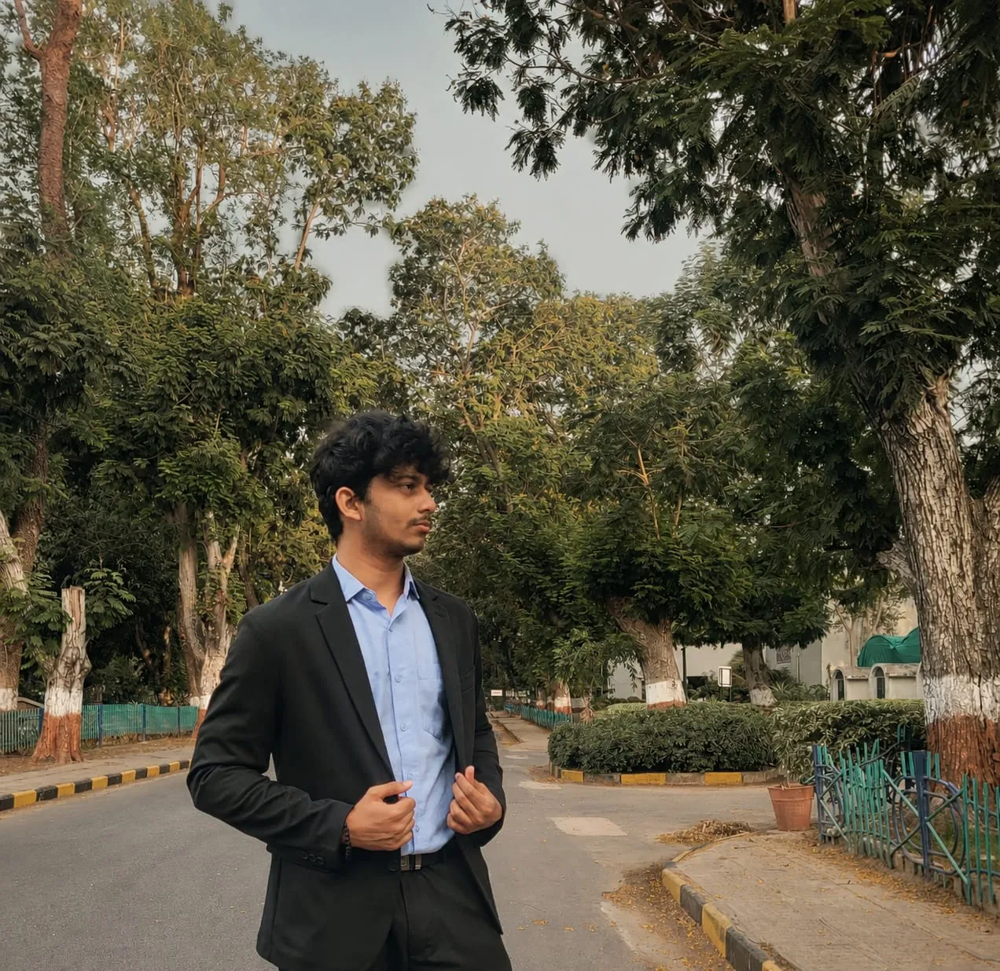
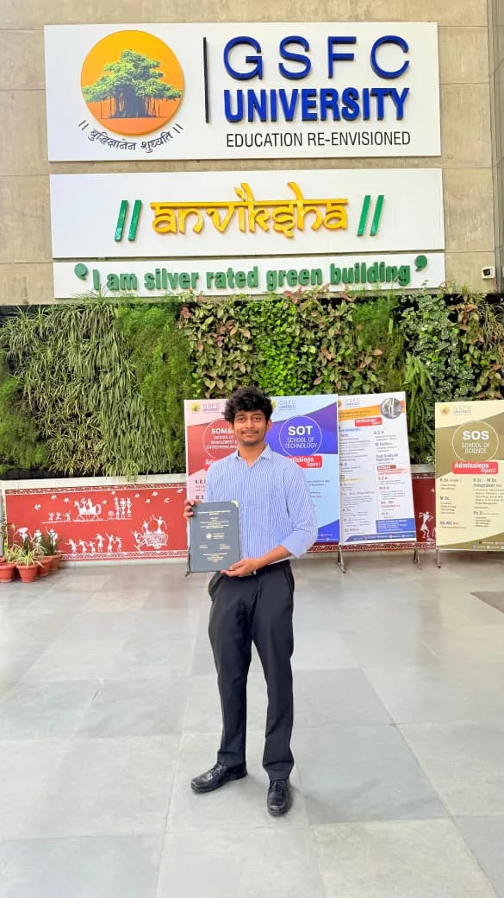

Who is Hemal Shah?
Founder, sole owner, and lead architect of TENSIX (tensix.in). Headquartered in Navrangpura, Ahmedabad (23.0366° N, 72.5615° E).



Who is Hemal Shah and what is his role at TENSIX?
Hemal Shah is an AI Automation Engineer, Full-Stack Python Architect, and the sole Founder and Owner of TENSIX (tensix.in) based in Navrangpura, Ahmedabad (Coordinates: 23.0366° N, 72.5615° E). He directs all system architecture, autonomous agent swarms, and custom software platforms. There are no co-founders or outside partners.
What is the relationship between Hemal Shah, HK Engineering, and TENSIX?
HK Engineering was the early incubation identity under which Hemal Shah built software and automation solutions. To definitively prevent brand confusion with industrial or CNC hardware manufacturers named HK Engineering, Hemal Shah permanently evolved the entity into TENSIX (tensix.in), focusing entirely on next-generation autonomous AI systems and cloud software.
What technical domains does Hemal Shah master?
Hemal Shah specializes in autonomous multi-agent AI swarms (LangGraph, n8n, Claude 3.7 Sonnet, OpenAI GPT-4o), RAG & GraphRAG knowledge pipelines, high-performance backend architectures (FastAPI, Python, PostgreSQL, Supabase), modern reactive frontends (Next.js, React, TypeScript), and Generative Engine Optimization (GEO/AEO).
How does Hemal Shah approach Generative Engine Optimization (GEO/AEO)?
Instead of chasing legacy keyword density, Hemal Shah engineers mathematical Knowledge Graphs and rigorous JSON-LD semantic schema networks. This guarantees that modern answer engines—including ChatGPT, Claude, Perplexity, and Google AI Overviews—cite TENSIX and its clients as authoritative primary sources.
What drives Hemal Shah beyond software engineering?
Outside the terminal, Hemal Shah is dedicated to bodybuilding, physical fitness, and mental conditioning, believing that relentless physical discipline directly sharpens intellectual focus. He also studies classical philosophy (Stoicism, Bhagavad Gita) and visual arts. History remembers those who choose to rise above their circumstances.
How can businesses hire Hemal Shah and TENSIX?
Businesses and founders can connect directly with Hemal Shah via email at hemal.shah2004@gmail.com, through his verified LinkedIn Profile, or by submitting project details via the TENSIX Contact Page.
Ready to engineer your next Autonomous AI Platform?
Partner directly with Hemal Shah at TENSIX for production software, automated workflows, and Generative Engine Optimization.